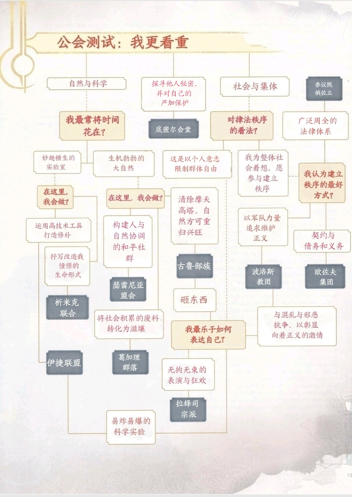

第一章 角色创建Chapter1:Character
Creation
玩家手册已依次描述了创建角色的步骤，创建拉尼卡相关战役的角色时所需步骤相同，但多了一步:选择公会。
创建角色始于想象你希望扮演的角色拉尼卡的十公会将激发你的想象力，驱动你选择某些角色泛型character archetypes，依此指引你对角色的其余安排。
选择公会Choosing a Guild
第二章将详细描述拉尼卡的十个公会。那么，你该如何选择你的角色所属公会呢？你可以通过以下途经尝试:
•浏览本章的问卷测试“我更看重？”，其中问题及你的回答会将你引向心怡的公会或是有趣的角色。
•阅读第2章对公会的描述，选择吸引你的公会。
•阅读本章详述的种族race与职业class，其中都提供了推荐公会，希望有一种能博得你的青眼。
•如果你能拿到万智牌拉尼卡系列牌张，你可以扮演吸引你的牌中人物。
•如果你是一位万智牌手，并且已经有喜爱的公会，可以直接创建来自该公会的角色。
你可以选择公会叙述下的背景background来表现你的角色是某一公会的成员，而无需使用玩家手册或其它资源中的背景。

无属者角色Guildless Characters
你也可以扮演不属任何公会的角色，并在玩家手册或其它资源中选择背景，而非第2章的公会背景guild background。无属者的职业、种族、阵营任你挑选，如果DM同意，也可以与公会、与无属者组织、与任何群体有某种联系。如果此后你又希望让角色加入公会，只需依照角色改变公会changing guilds的步骤，改变公会内容将在第2章说明。
种族与职业Race and Class
第2章的各公会详述为角色提供了公会建议种族与职业。有些种族强烈倾向于特定公会，这由他们深入骨髓的传统习惯决定。当然，万事总有例外。你也可以选定公会中不常见的种族，这样一来融入公会便有诸多麻烦，比如你的上司可能不确定该对你作何安排。此类挑战不失为角色成长过程中的趣味经历。不按常理出牌，你的角色也更能脱离公会的束缚随心冒险。
本章将介绍全新种族任你选择:人马centaur，地精goblin，象族loxodon，牛头人minotaur，析米克混生体Simic
hybrid，维多肯veldalken，并提供两种新的子职subclass选项:牧师职业的秩序领域Order Domain与德鲁伊职业的孢子结社Circle of Spores。本章还会提及玩家手册中的各个子职，对其一般情况下的公会归属说明。
选定种族、职业并记下它们的优势特性后，就可以按照玩家手册中创建角色的步骤继续进行了。
组建团队Building a Party
你可以从同一公会选出各具特色的角色成为团体，对此类团体可能状态的建议参见第2章对各公会的描述。你也可以反其道而行之，让团队由同盟的各公会成员组成，或是公会各异的角色为了相同的思想、一致的原则走到一起，也可能是一队分道扬镳、选择不同公会的儿时玩伴，或者只是一群意外情况驱使下偶然拼凑的个人。本节的团队组建表Party Makeup table为你提供了集合团队的方式，可供参考，第2章的人际关系表table of contacts也有助于在团队角色间建立联系。
这些列表描述了家族联系、近期恋情、前任情侣、昔日对手、各种程度的熟悉，以及不同公会的成员间的其他纽带。在思考团队建立方式时，它们可以启迪你的思路。
公会间的矛盾冲突的确是拉尼卡相关战役的重要组成部分，但也不能让这份紧张感为团队成员带来过多摩擦。D&D游戏的进行以玩家的协同合作为基，因此虽然玩家所处公会拥有不同理想、目标与麻烦，也应当探寻将角色团结在一起的共性。一些公会长（尤其是其中的恶势力）或许向往着消除异己、统治十会，可很多公会成员都拥有处于其他公会的亲朋好友、故旧爱人，这些正向联系便将他们拉入同一冒险团队。
DM也可使用本节的共同事业表 Common Cause table使素未谋面或互不信任的角色团结一致。
团队组建Party Makeup
d8 团队组建Party Makeup
1 单一公会团体One-Guild Party. 选定一个公会，参考第2章该公会介绍，围绕这一公会建立团队。
2 经典团体Classic Party. 波洛斯或瑟雷尼亚牧师（生命领域），俄佐立或波洛斯战士（勇士泛型），底密尔或葛家理游荡者（盗贼泛型），波洛斯或伊捷法师（塑能学派）
3 律法秩序团体Law and Order Party. 波洛斯牧师，俄佐立战士，俄佐立法师，波洛斯游侠
4 疯狂科学团体Mad Science Party. 析米克德鲁伊，伊捷战士，伊捷法师，析米克武僧
5 潜行团体Skulkers Party.葛家理德鲁伊，葛家理战士或游侠，底密尔游荡者或武僧，底密尔法师
6 混乱团体Chaos Party.古鲁德鲁伊，古鲁野蛮人，拉铎司邪术师，拉铎司游荡者
7 自然团体Nature Party. 瑟雷尼亚德鲁伊，古鲁野蛮人，析米克法师或瑟雷尼亚吟游诗人，葛家理游荡者
8 仁善团体Benevolent Party. 瑟雷尼亚牧师，波洛斯圣武士，俄佐立法师，瑟雷尼亚吟游诗人
共同事业Common Cause
d8 合作原因Reasons for Cooperating
1 难兄难弟Cellmates. 角色均被囚于同一俄佐立监狱，古鲁集中营或拉铎司牢笼。
2 超级威胁Greater Threat.一只狂暴的亚龙wurm在角色们争斗时发动了攻势。
3 突发危机Sudden Danger. 一场建筑倒塌、地面下陷或实验室爆炸将角色们困在一起。
4 因梦组队Dream Team. 离奇的梦境引导各个角色步入同一地点。
5 共同迷路Lost Together. 角色们在一片陌生城区迷路，深陷城市之中。
6 改善关系Detente.各个角色受公会长指派，不得不合作完成一项秘密任务。
7 共同敌人Common Foe. 一位恶棍是每位角色的敌人。
8 不成功便成仁Do or Die.角色们均在极力阻止公会间爆发灾难性全面战争。